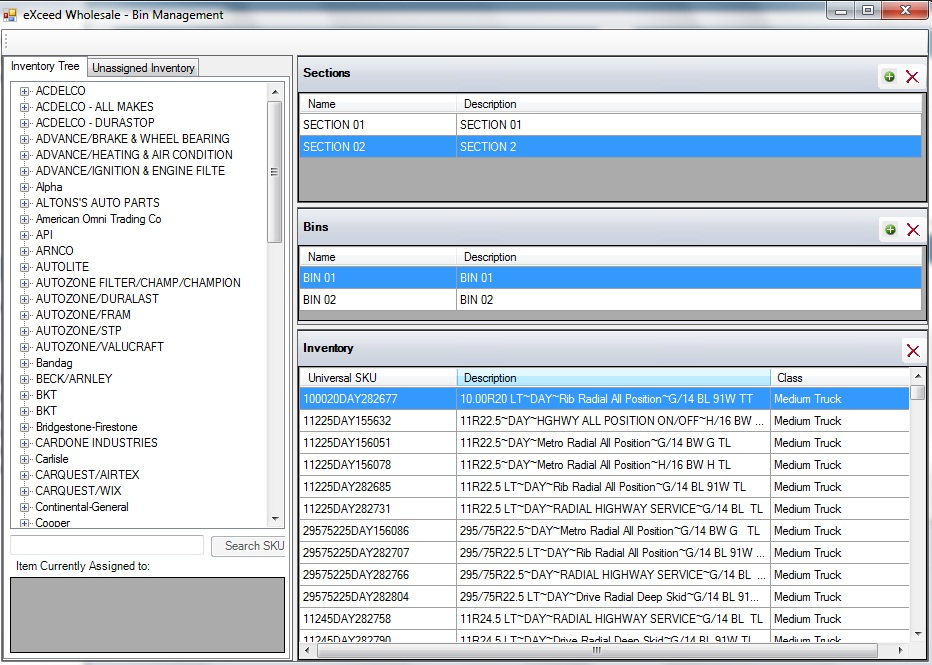
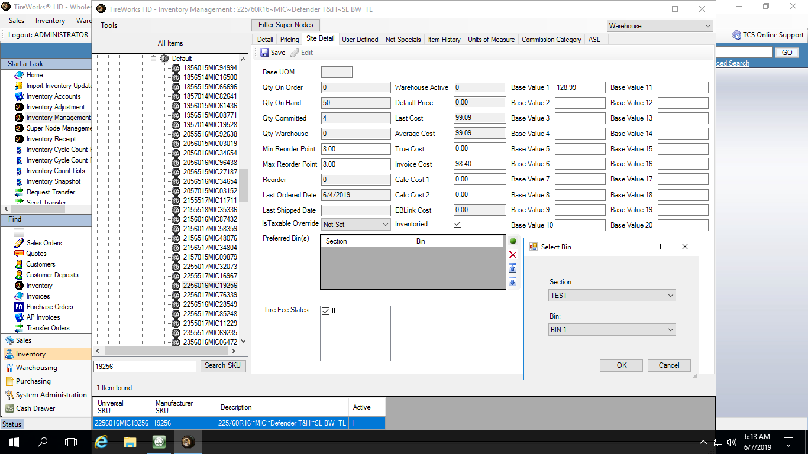

Bin Management
The Bin Management function allows you to setup Warehouse Sections and Bins. Inventory can be assigned to one or multiple sections/bins for use in Pick Lists, Inventory Receipts, etc.
Home Screen: Select Warehousing from module toolbar, and then Bin Management

Setup Sections
- Select plus sign at Sections and populate section name and description
- Repeat until all desired sections have been created
- Sections can be deleted by highlighting desired section to be deleted and choosing the “x”
Setup Bins
- Highlight desired Section
- Select plus sign at Bins and populate bin name and description
- Repeat until all desired bins have been created
- Bins can be deleted by highlighting desired bin to be deleted and choosing the “x”
Assign Items to Section/Bins
- Highlight any branch or individual Sku from Inventory Tree tab
- Drag to the inventory section and drop
Maintenance of new items
- Unassigned Inventory tab will allow you to see what has not been assigned and the same steps to assign can be used from above.
 Notes:
Notes:
- CTRL button will allow you to select more than one item at a time and SHIFT will allow you to select a range of items (select top item and bottom and it will highlight everything in between)
- When creating new items via Manage Inventory section and bin can also be associated with item.

-
- From Inventory Module select Inventory Management
- Select Site Detail Tab
- At Preferred Bin(s) select plus sign
- Chose desired Sections and Bin from drop downs
- Select OK
- Repeat if Sku can be found in multiple bins